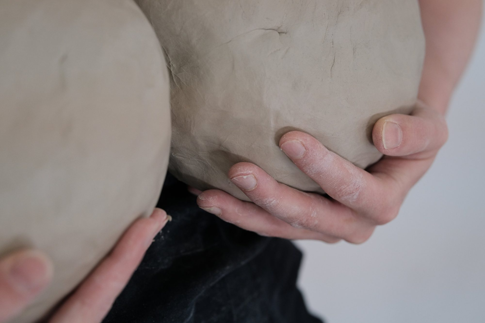

Momomento (AT) · Contemporary circus
BEING mOTHER
Can you raise a child and keep making your art? Two new mothers try to find out, with acrobatics, live music and a great deal of clay.
Tickets €18 / €16 / €14 · 60 minutes, no interval

About the piece
Parenthood and artistic self-realisation: a balancing act. Two young mothers take stock of who they have become, with new identities, new perspectives and decisions they did not expect to have to make.
The deep joy of a new life sits right next to turbulence, anger and exhaustion, and the expectations and judgement of everyone watching. Through narrative circus, live music and thirty kilograms of clay, the piece asks how much room your own art can still claim when everything suddenly changes.
Ruth and Birgit know what they are talking about. Both are young mothers and artists: Ruth specialises in foot juggling and dance acrobatics, Birgit is a visual artist and musician. For BEING mOTHER they built a language of their own, where voice meets body and body meets clay, telling the journey into parenthood through juggling, physical theatre, sand projections and live music.
Details
- Performance
- Ruth Biller, Birgit Gyg
- Midwife (direction)
- Maria Sendlhofer
- Genre
- Narrative circus meets visual art and music
- Company
- Momomento, narrative circus art
- @cie_momomento
- Duration
- 60 minutes, no interval
- Language
- German, with only a few words spoken. A short text of the spoken words is available to pick up at the venue before the show.
- Flyer
- View the flyer (in German)
- Please note
- The show includes moments of complete darkness.

Photos


Venue and tickets
TRIBÜNE LINZ Theater am Südbahnhofmarkt
Eisenhandstraße 43, 4020 Linz